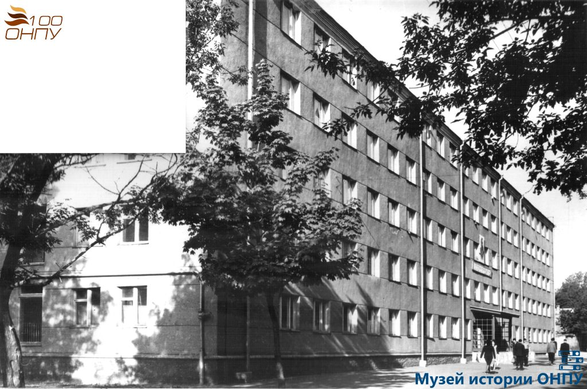

ЗДАНИЯ
Строительство копусов ОНПУ, создание студгородкаФото 1962 года
На рубеже XIX-XX веков это была всего лишь Ново-Аркадийская дорога - загородная, не совсем широкая, грунтовая, которая протянулась между Французским бульваром и Средне-Фонтанской дорогой, сейчас называется просто Фонтанской. И находилась она в таком статусе до ноября 1959 года, когда ее переименовали в Ново-Аркадийскую улицу. Однако в конце 1964 года Ново-Аркадийскую возвели в ранг проспекта Шевченко.
Фото 1958 года. Корпус №1 (А).
В послевоенные годы на Ново-Аркадийской размещался Кредитно-экономический институт. Позже он обменялся зданиями с Политехническим институтом. Переезд состоялся в 1958 году. В нашем распоряжении были 2 корпуса: административный корпус №1 (А) и учебный корпус №2 (В). А на проспекте Шевченко появился построенный по проекту архитекторов Б.Поздирко и Н.Тишкиной комплекс Политехнического, тогда еще института, ныне университета: учебные корпуса, лаборатории, библиотека, Дворец культуры, памятник погибшим во время войны студентам и преподавателям - скульптура величественной в своей скорби женщины с оливковой ветвью в руках.
Фото 1968 года. Корпус №1 (А).
Корпус №2 (У), 1980-е годы
Строительство главного учебного корпуса, 1960-е годы
Главный учебный корпус (ГУК), 1969 г.
Общий вид зданий общежитий ОПИ, 1960-е годы
Общий вид зданий общежитий ОПИ, 1960-е годы
В 1960-е годы происходили закладки корпусов радиоэлектроники и химии
Фото 1966 г. Корпус физики.
Строительство лабораторного корпуса радиоэлектроники, 1960-е годы
Строительство лабораторного корпуса химии, 1960-е годы
Строительство библиотечного корпуса. За индустриальные кадры, 1966
Из музея ОНПУ
Общежитие №4